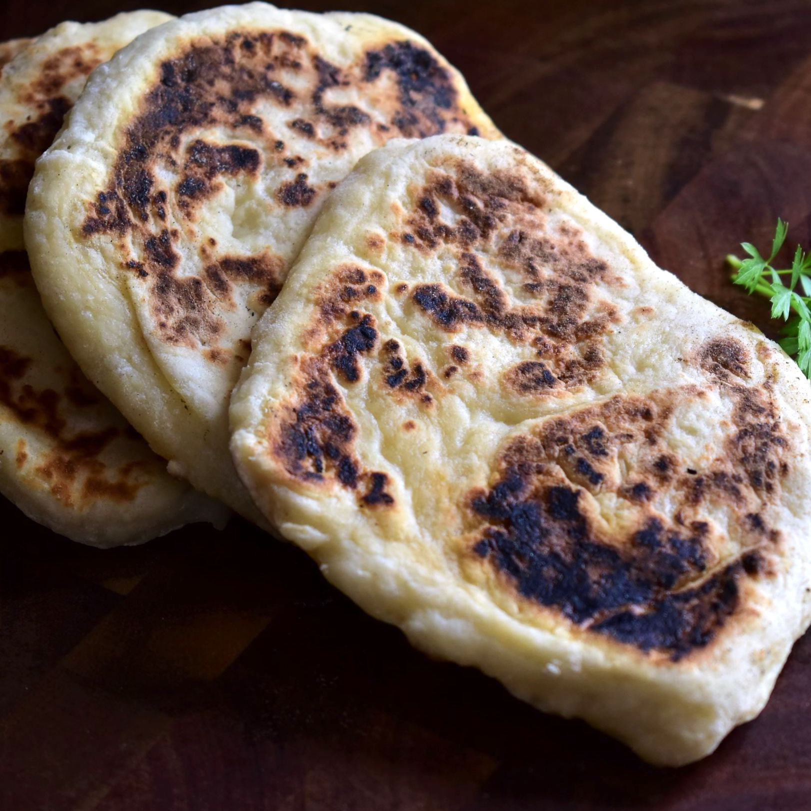

Soft Nan

Description
You'll find the full, step-by-step recipe below — but here's a brief overview of what you can expect:
Ingredients
- 1 ¼ cups self-rising flour, or more as needed
- 1 cup whole-milk Greek yogurt
- etc
Steps:
- Mix self-rising flour and Greek yogurt together in a large bowl until combined. Transfer to a lightly floured work surface and knead until smooth, adding more flour as necessary to keep dough from sticking, 2 to 3 minutes.
- Pat dough into a rough 9x7-inch rectangle. Divide into 8 equal pieces. Lightly dust each piece with flour and flatten into a semi-rectangular shape, about 1/4 inch thick.
- Lightly grease a large skillet and place it over medium heat. Add 1 or 2 of the flattened dough pieces to the skillet. Cook until they begin to bubble and brown, 2 to 4 minutes. Flip over and cook an additional 2 to 4 minutes. Remove from heat and repeat with remaining dough until all pieces are cooked. Serve warm.